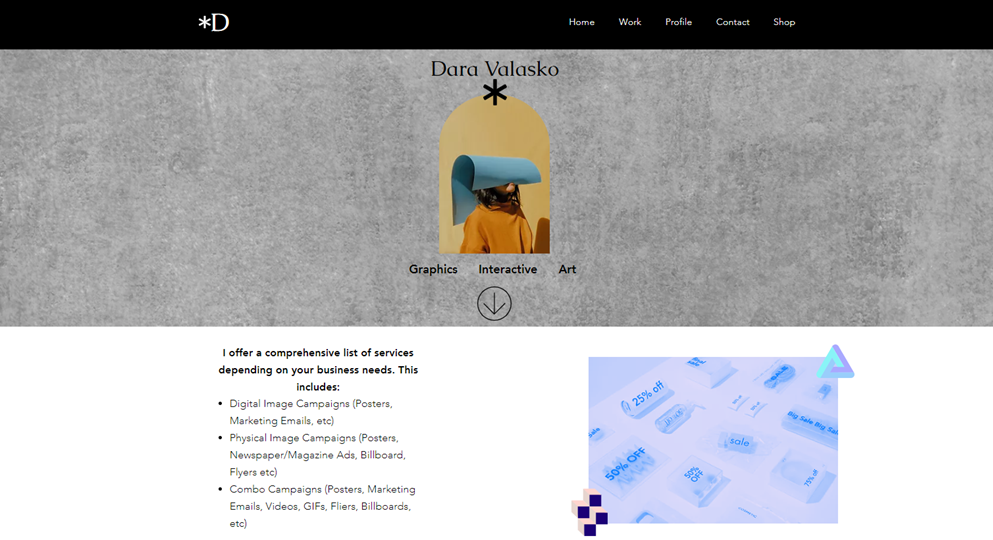

3.Content
Task 1. Add the desired section to the "About me" and "My hobbies" pages from the "Add section" menu and add information and pictures related to the topic.
Sections are a quick and easy way to structure your pages. Use them to organize your site's content, and create a clear, comprehensive design. There are a variety of predesigned sections available with different layouts and elements, so you have everything you need to get started.
Add a section to your site to begin structuring your pages and their content.
There are a range of pre-designed options available that include layouts and elements to help you build your site. You can also choose a blank section to build it from scratch.
Name your sections for quick and easy navigation. You can use section names to identify them in the layers panel. If you choose to add a section to your menu, names are also a great way for your visitors to know what they're clicking on.
Adding sections to your menu is a great way to help your visitors navigate your site, and direct them to the right content.
Making sections a menu item is also particularly useful if you have a one-page site that contains a lot of information, as visitors will be able to find what they're looking for without having to scroll.
You can easily adjust the layout of your site page by rearranging your sections. Move sections up or down to arrange your site content, and provide an aligned, easy experience for your visitors.